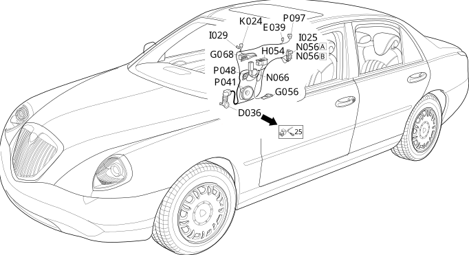

35 right rear door
- Path
- Electrical equipment > Wiring > 35 right rear door
- Kind
- wiring harness
- Applies to
- all engines; all production periods
- Interactive page
- https://sloeber94.github.io/elrnDB-lThss/en/#/207366
Applies to: all engines; all production periods

Topics that link to this page (15)
- D036 Right rear door coupling(REAR)
- E039 Unit signalling passenger rear door locking/unlocking(RIGHT REAR DOOR)
- G043 Passenger side rear ashtray light(RIGHT REAR DOOR)
- G056 Right rear door light(RIGHT REAR DOOR)
- G068 Right rear door handle light(RIGHT REAR DOOR)
- H054 Electric window switch on right rear door(RIGHT REAR DOOR)
- I025 Switch on passenger side rear exterior handle(RIGHT REAR DOOR)
- I029 Passenger rear door locking/unlocking switch(RIGHT REAR DOOR)
- K024 Anti-crush safety sensor in passenger rear door(RIGHT REAR DOOR)
- N056A Right rear door lock geared motor(RIGHT REAR DOOR)
- N056B Right rear door lock geared motor(RIGHT REAR DOOR)
- N066 Right rear electric window motor(RIGHT REAR DOOR)
- P041 Speaker in right rear door(RIGHT REAR DOOR)
- P048 Right rear tweeter speaker(RIGHT REAR DOOR)
- P097 RF aerial on right rear door for passive entry (NPE)(RIGHT REAR DOOR)